My stepbrother finally married.
The entire ordeal was family-centric, consisting of a rehearsal and rehearsal dinner (family only), the ceremony, and the after-ceremony lunch (family only). Great to see everyone and meet the extended family. Pictures speak louder than words at these events.
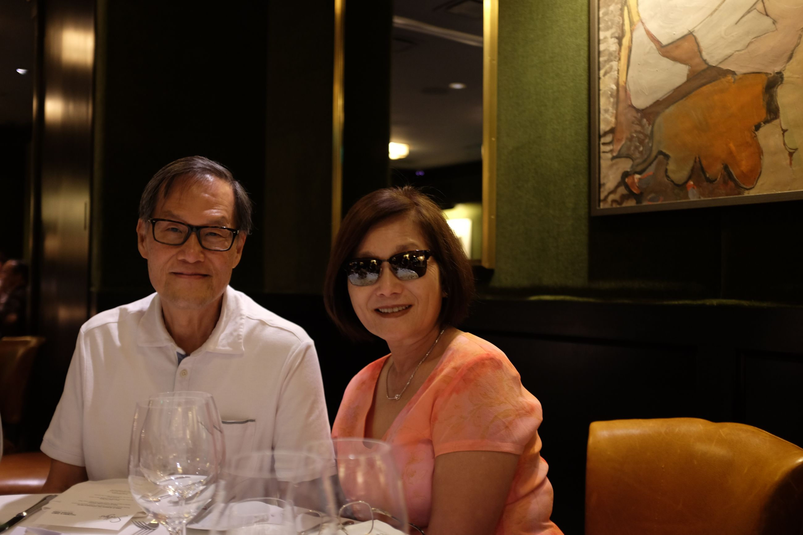 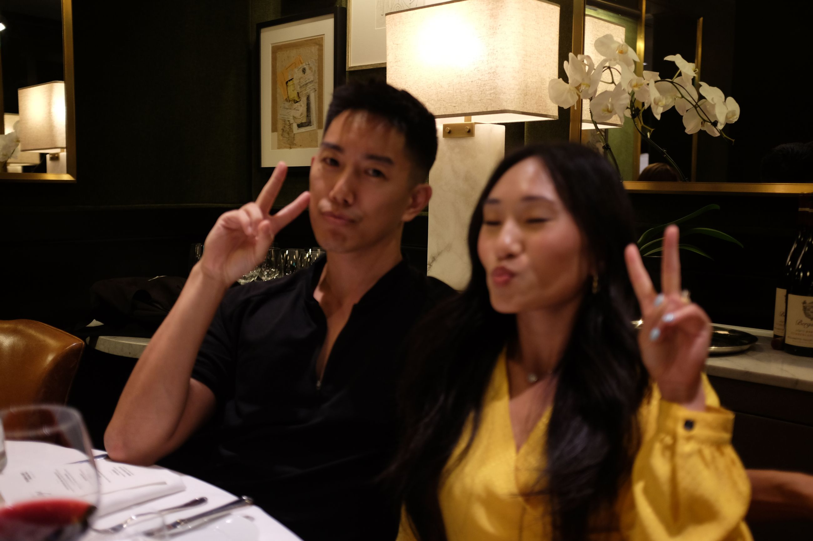 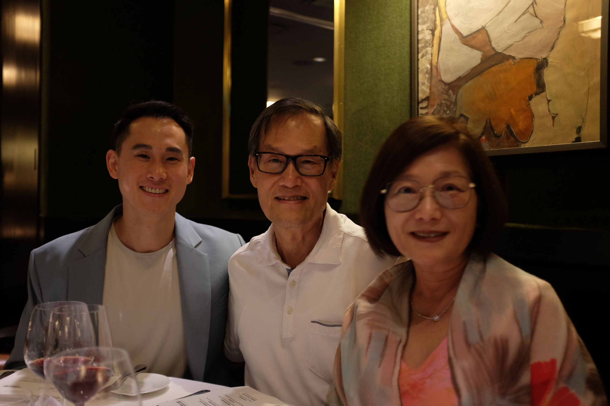 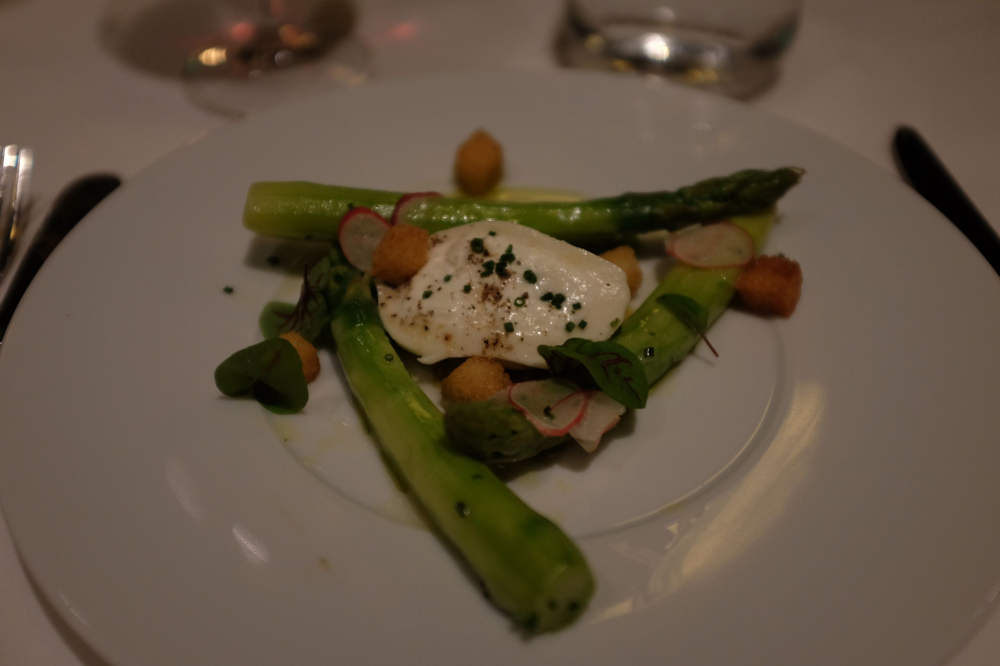 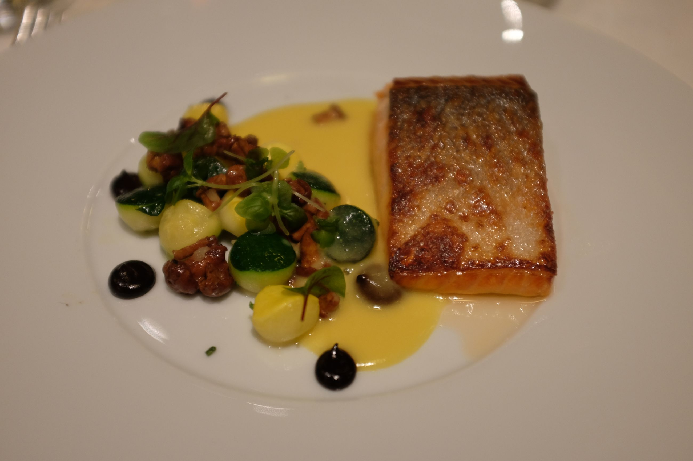 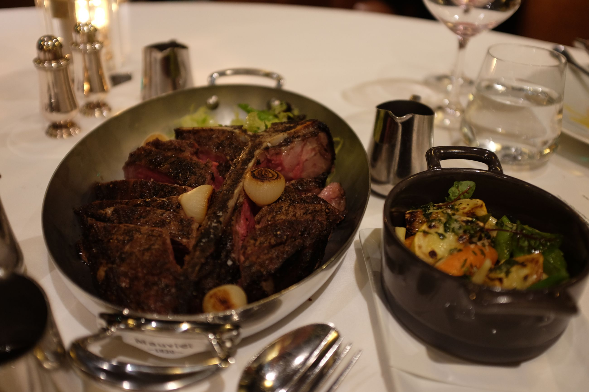 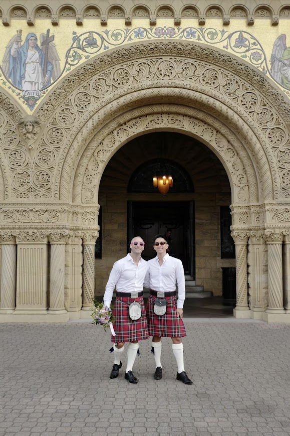 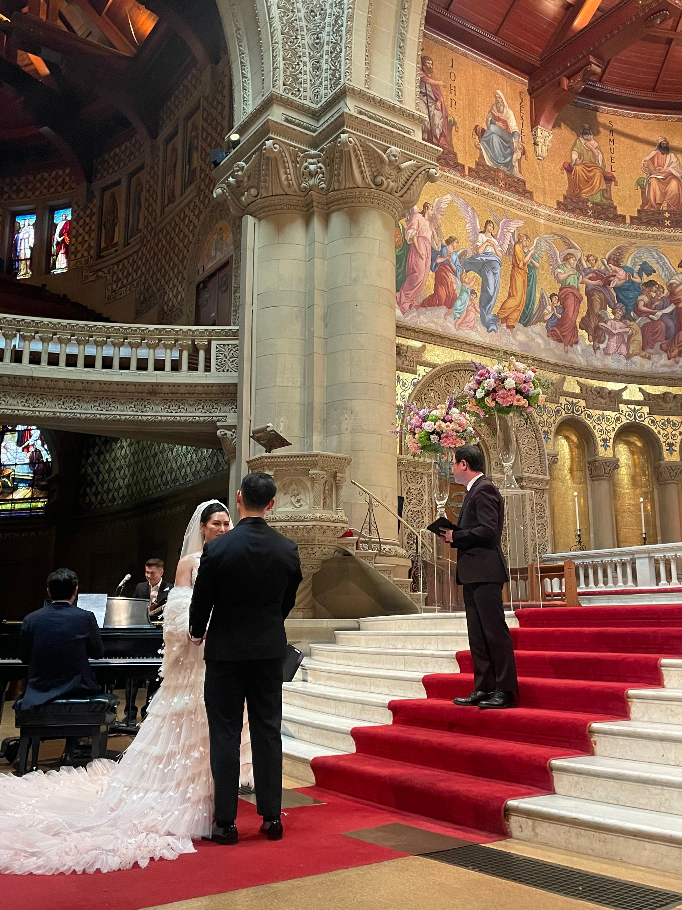 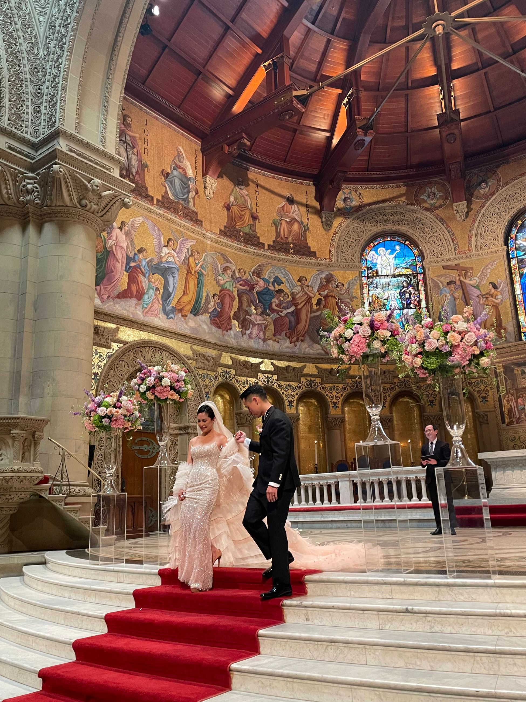 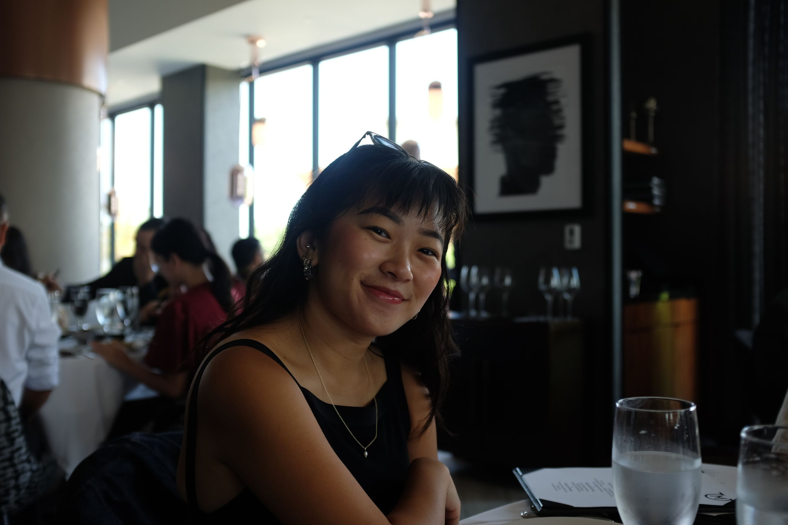
Congratulations to Minh, Jimmy.
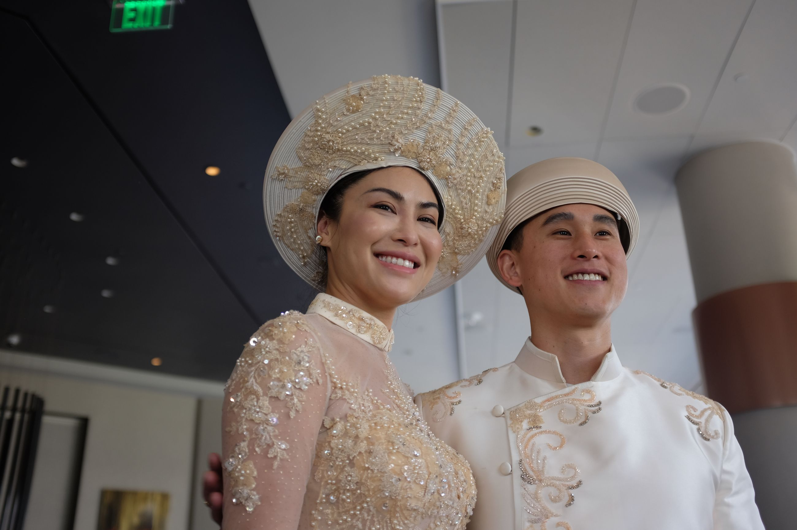